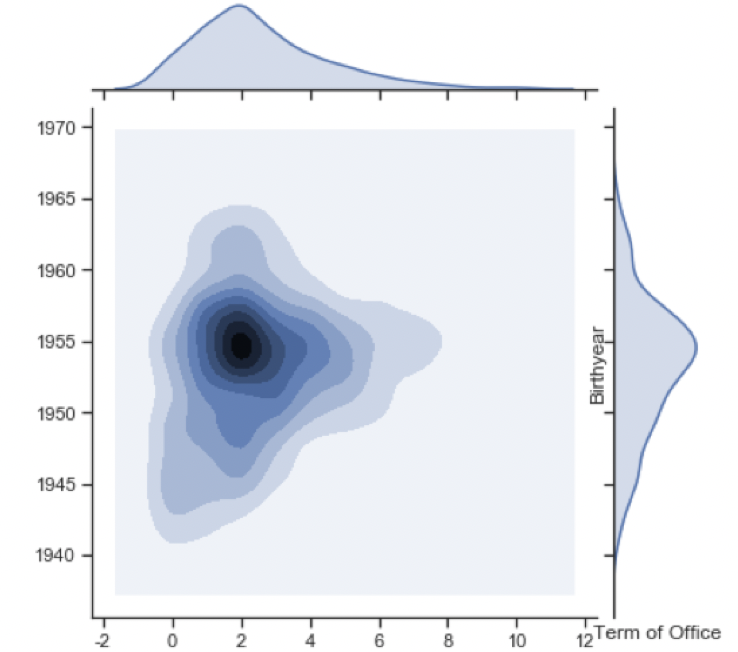
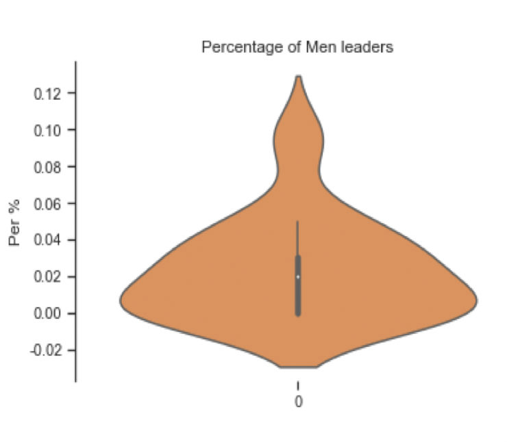
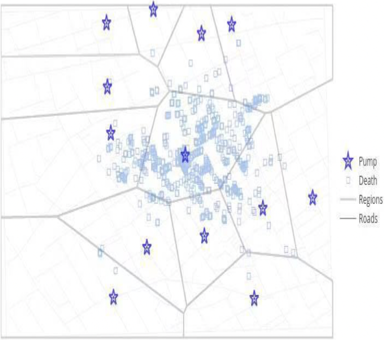

数据可视化分析方法
A skill is the ability to carry out a task with determined results often within a given amount of time. Skill usually requires certain environmental stimuli and situations to assess. Skilled memory enables experts to rapidly encode, store, and retrieve information within the domain of their expertise.
案例分析
数据可视化分析的一个巨大优势是：将碎片化信息整合到一个更大的应用环境中分析，
通过图表等形式将结果可视化给大家。

党委书记数据库可视化
主要通过对原始数据清洗，整理进而分析研究性别构成、年龄情况、专业情况、任期情况等问题，最终以图表形式可视化结果。

用户消费行为数据可视化
针对原数据集，进行数据整合及清洗，利用RFM分层模型对数据进行多维度分析，以便分析个人消费能力

霍乱源头及分布区域可视化
针对原数据集，进行数据整合及清洗，分析霍乱源头及分布区域，以便对相关领域进行检测，防止再出现类似惨祸。